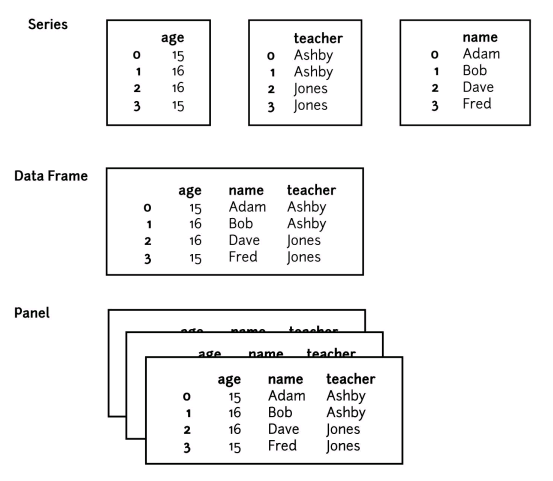
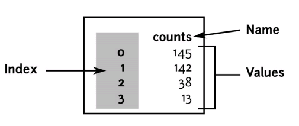
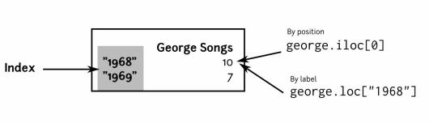
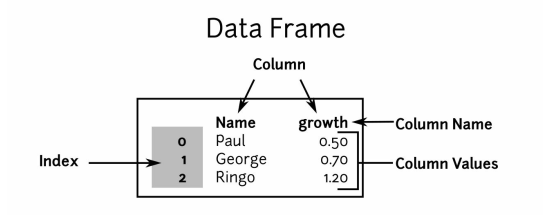
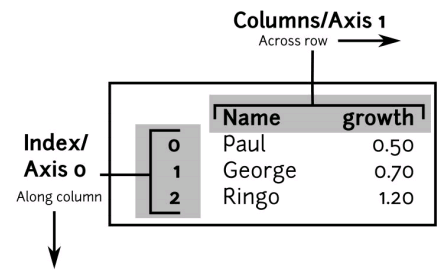
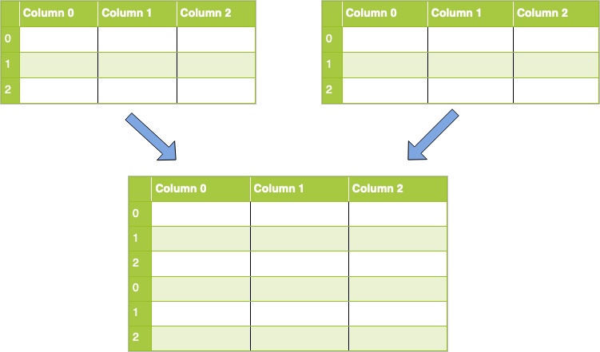
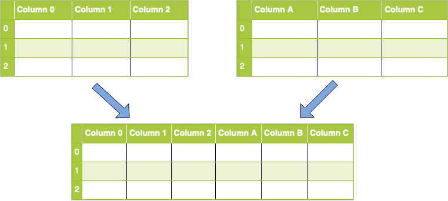

About me
- Principal Technical Consultant Engineer @ Perforce
- https://www.linkedin.com/in/dartie/
- Member of Nalug (https://www.nalug.tech/)
- Python and Go(lang) developer
Introduction
- Data analysis is the process of inspecting, cleansing, transforming, and modelling data with the goal of discovering useful information
Example
Whenever we take any decision in our day-to-day life is by thinking about what happened last time or what will happen by choosing that particular decision.
“pandas is an open source, BSD-licensed library providing high
performance, easy-to-use data structures and data analysis tools
for the Python programming language.”
-pandas.pydata.org“In memory nosql database, that has sql-like constructs, basic
statistical and analytic support, as well as graphing capability.”
-Matt Harrison-
It is built on top of Cython, therefore it has less memory overhead and runs quicker.
-
Pandas allow users to avoid using a Python-like dialect and gets close to the C in terms of performance.
Help
Cython is a compiled language that is typically used to generate CPython extension modules.
Installation
pip3 install pandasImport conventions
import pandas as pdIDE
-
Local environments
-
Web-based environments
Data Structures
| Data structure | Dimensionality | Spreadsheet Analog | Data deals with |
|---|---|---|---|
| Series | 1D | Column | Array |
| Dataframe | 2D | Single Sheet | Tabular |
| Panel | 3D | Multiple Sheets |

- Dataframe : collection of series objects
- Panel : collection of dataframes objects
Series
- One dimensional data structure.
- It can hold numerical data, time data, strings, or arbitrary Python objects.
- It is used to model one dimensional data, similar to a list in Python
- It's formed of
indexand aname - Many of the operations performed on a Series operate directly on the index or by index lookup
- It is faster, consumes less memory, and comes with built-in methods that are very useful to manipulate the data.
| Artist | Data |
|---|---|
| 0 | 145 |
| 1 | 142 |
| 2 | 38 |
| 3 | 13 |
ser = {
'index':[0, 1, 2, 3],
'data':[145, 142, 38, 13],
'name':'songs'
}Native python implementation
songs = {
'index':['Paul', 'John', 'George', 'Ringo'],
'data':[145, 142, 38, 13],
'name':'counts'
}
def get(ser, idx):
value_idx = ser['index'].index(idx)
return ser['data'][value_idx]
get(songs, 'John')142Series Types
- Index: Series' indexes can be integers or strings
- Data: a Series can hold strings, floats, booleans, or arbitrary Python objects
Note
To get the best speed (such as vectorized operations), the values should be of the same type
Types
-
Object:
- Used for heterogeneous types
- Used for strings
-
Number:
- Mixed int and float make float (int are converted to float64)
-
NaN (Not a Number):
- Used when a series holds numeric values, but it cannot find a number to represent an entry, it will use NaN.
- It's not counted
- When NaN is present, other integer data become float: NaN is only supported by float, not by int.
nan_ser = pd.Series([2, None], index=['Ono', 'Clapton']) print(nan_ser)Ono 2.0 Clapton NaN dtype: float64nan_ser.count()1
Create Series
import pandas as pd
songs2 = pd.Series([145, 142, 38, 13], name='counts')
print(songs2)0 145
1 142
2 38
3 13
Name: counts, dtype: int64
- Name for
Index->Axis -
Name for
Values of the index->Axis labels -
Inspect index
songs2.indexRangeIndex(start=0, stop=4, step=1)
Series Indexing
In case index label is a string (object)
george = pd.Series([10, 7], index=['1968', '1969'], name='George Songs')
print(george)1968 10
1969 7
Name: George Songs, dtype: int64-
Indexing the object by position
print(george[0])10 -
Indexing the object by key
print(george['1968'])10
In case index label is an integer
-
Indexing the object by position
print(george[0])10
Optimized data access methods
Position-based indexing (.iloc)
george.iloc[0]10george.iloc[-1]7george.iloc[4]Traceback (most recent call last):
IndexError: single positional indexer is out-of-boundsgeorge.iloc['1968']Traceback (most recent call last):
TypeError: cannot do positional indexing on <class
'pandas.indexes.base.Index'> with these indexers [1968]
of <class 'str'>Slice
george.iloc[0:3] # slice1968 10
1969 7
Name: George Songs, dtype: int64Indexing with list
george.iloc[[0,1]] # list1968 10
1969 7
Name: George Songs, dtype: int64label-based indexing (.loc)
- Based on the index labels and not the positions (analogous to Python dictionary-based indexing)
george.loc['1968']10george.loc[['1968', '1970']] # list1968 10.0
1970 NaN
Name: George Songs, dtype: float64george.loc['1968':] # slice1968 10
1969 7
Name: George Songs, dtype: int64Summary

.at() (vs .loc())
- Get/set numpy array results by index label.
- Return a numpy.ndarray whereas
.loc()returns a Series
george_dupe = pd.Series([10, 7, 1, 22], index=['1968', '1969', '1970', '1970'], name='George Songs')george_dupe.at['1970']array([ 1, 22])george_dupe.loc['1970']1970 1
1970 22
Name: George Songs, dtype: int64.iat()
- Getting/setting numpy array results by index position.
- Supports both positional and label based indexing, although is suggested to be avoided
george_dupe.ix[0]3310george_dupe.ix['1970']1970 1
1970 22
Name: George Songs, dtype: int64Series methods
Mean vs Median
Both are measures of where the center of a data set lies (called “Central Tendency” in stats), but they are usually different numbers. For example, take this list of numbers:
10, 10, 20, 40, 70.-
The mean (informally, the "average") is found by adding all the numbers together and dividing by the number of items in the set:
10 + 10 + 20 + 40 + 70 / 5 = 30. -
The median is found by ordering the set from lowest to highest and finding the exact middle. The median is just the middle number: 20.
Sometimes the two will be the same number. For example, the data set 1, 2, 4, 6, 7 has a mean of 1 + 2 + 4 + 6 + 7 / 5 = 4 and a median (a middle) of 4.
import pandas as pd
# Creating the Series
sr = pd.Series([10, 10, 20, 40, 70])
# Print results
print(sr.mean())
print(sr.median())30.0
20.0Series CRUD (Create,Read,Update,Delete)
Create
List
george_dupe = pd.Series([10, 7, 1, 22],
index=['1968', '1969', '1970', '1970'],
name='George Songs')
print(george_dupe)1968 10
1969 7
1970 1
1970 22
Name: George Songs, dtype: int64Dictionary
g2 = pd.Series({'1969': 7, '1970': [1, 22]},
index=['1969', '1970', '1970'])
print(g2)1969 7
1970 [1, 22]
1970 [1, 22]
dtype: objectReading
print(george_dupe['1968'])10Warning
When the index is duplicate, the result is not scalar as the first case
print(george_dupe['1970'])1970 1
1970 22
Name: George Songs, dtype: int64Iteration
for item in george_dupe:
print(item)10
7
1
22-
Iteration over index and value
for index, value in george_dupe.iteritems(): print(index, value)1968 10 1969 7 1970 1 1970 22
Check if value exists
Error
It doesn't work as python list and dictionary
22 in george_dupeFalseSuccess
22 in set(george_dupe)TrueOR
22 in george_dupe.valuesTrueUpdating
Update based on index
george_dupe['1969'] = 6
print(george_dupe['1969'])6Warning
In case of duplicate index, both will be updated
george_dupe['1970'] = 2
print(george_dupe)1968 10
1969 6
1970 2
1970 2
1973 11
Name: George Songs, dtype: int64Update value based on position (iloc())
george_dupe.iloc[3] = 22
print(george_dupe)1968 10
1969 6
1970 2
1970 22
1973 11
Name: George Songs, dtype: int64Append
- Unlike
append()in python list, it requires another series
new_george_dupe = george_dupe.append(pd.Series({'1974': 9}))
print(new_george_dupe)1968 10
1969 6
1970 2
1970 22
1973 11
1974 9
dtype: int64Warning
In January '22, Pandas 1.4.0 marked this as deprecated (see more here)
Use .concat() instead:
new_george_dupe = pd.concat([george_dupe, pd.Series({'1974' : 9})])Deletion
Based on index entries
s = pd.Series([2, 3, 4], index=[1, 2, 1])
del s[1]
print(s)1 4
dtype: int64Filter (creates a new series)
new_george_dupe = george_dupe[george_dupe <= 2]
print(new_george_dupe)1970 1
Name: George Songs, dtype: int64Dataframe
import pandas as pd
df = pd.DataFrame({
'growth':[.5, .7, 1.2],
'Name':['Paul', 'George', 'Ringo'] })
print(df) Name growth
0 Paul 0.5
1 George 0.7
2 Ringo 1.2
-
Access row:
df.iloc[2]Name Ringo growth 1.2 Name: 2, dtype: object -
Access column:
df['Name']0 Paul 1 George 2 Ringo Name: Name, dtype: object
Dataframe axis

- To sum up each of the columns, we sum along the index axis (axis=0), or along the row axis:
# create a dataframe with random integers
import pandas as pd
import numpy as np
df = pd.DataFrame(np.random.randn(10,3), columns=['a', 'b', 'c'])
df.apply(np.sum, axis=0)a 2.670586
b 4.863399
c 3.876848
dtype: float64- To sum along every row, we sum down the columns axis (axis=1):
df.apply(np.sum, axis=1)0 1.923337
1 -1.990478
2 1.219685
3 -0.892176
4 2.153412
5 2.205712
6 4.095937
7 2.163245
8 -2.840454
9 3.372612
dtype: float64Create Dataframe
Create from lists
import pandas as pd
# initialize list of lists
data = [['tom', 10], ['nick', 15], ['juli', 14]]
# Create the pandas DataFrame
df = pd.DataFrame(data, columns = ['Name', 'Age'])
print(df) Name Age
0 tom 10
1 nick 15
2 juli 14Create from dict narray / lists
import pandas as pd
# initialize data of lists.
data = {'Name':['Tom', 'nick', 'krish', 'jack'],
'Age':[20, 21, 19, 18]}
# Create DataFrame
df = pd.DataFrame(data)
print(df) Name Age
0 Tom 20
1 nick 21
2 krish 19
3 jack 18Create from arrays
import pandas as pd
# initialize data of lists.
data = {'Name':['Tom', 'Jack', 'nick', 'juli'],
'marks':[99, 98, 95, 90]}
# Creates pandas DataFrame.
df = pd.DataFrame(data, index =['rank1',
'rank2',
'rank3',
'rank4'])
print(df) Name marks
rank1 Tom 99
rank2 Jack 98
rank3 nick 95
rank4 juli 90Create from list of dictionaries
import pandas as pd
# Initialize data to lists.
data = [{'a': 1, 'b': 2, 'c':3},
{'a':10, 'b': 20, 'c': 30}]
# Creates DataFrame.
df = pd.DataFrame(data, index =['first', 'second'])
print(df) a b c
first 1 2 3
second 10 20 30Create using zip() function
import pandas as pd
# List1
Name = ['tom', 'krish', 'nick', 'juli']
# List2
Age = [25, 30, 26, 22]
# get the list of tuples from two lists and merge them by using zip().
list_of_tuples = list(zip(Name, Age))
df = pd.DataFrame(list_of_tuples,
columns = ['Name', 'Age'])
print(df) Name Age
0 tom 25
1 krish 30
2 nick 26
3 juli 22Create from dictionary of series
import pandas as pd
# Initialize data to Dicts of series.
d = {'one' : pd.Series([10, 20, 30, 40],
index =['a', 'b', 'c', 'd']),
'two' : pd.Series([10, 20, 30, 40],
index =['a', 'b', 'c', 'd'])}
df = pd.DataFrame(d)
print(df) one two
a 10 10
b 20 20
c 30 30
d 40 40Create from Django model
import pandas as pd
import datetime
from myapp.models import BlogPost
df = pd.DataFrame(list(BlogPost.objects.all().values()))
# case with django filter
# df = pd.DataFrame(list(BlogPost.objects.filter(date__gte=datetime.datetime(2012, 5, 1)).values()))
# limit which fields
df = pd.DataFrame(list(BlogPost.objects.all().values('author', 'date', 'slug')))Create json from dataframe
records = df.values.tolist() Dataframe import/export
-
Supported formats:
- CSV, JSON
- HDF, Pickle
- Excel
- HTML
- SQL
- Latex
- Image
-
For the full list and options check the official pandas documentation
Import
<dataframe_variable>.read_<format>(<path>)- Most common options
headers: allow to specify the first row-cell/column-cell to dump data frame
From Spreadsheet
df = pd.read_excel(xls, 'Sheet1') df = pd.read_excel(xls, 'Sheet1', header=1) # if the header is set on the first sheet linedf = pd.read_excel(xls, 'Sheet1', header=1, converters={'DateColumn': str}) # if dates must be left as stringxls = pd.ExcelFile('path_to_file.xls')-
Read a specific sheet using the index
xls = pd.ExcelFile('path_to_file.xls') sheet1 = xls.parse(0) -
Read a specific sheet using the name
data_file = pd.read_excel('path_to_file.xls', sheet_name="sheet_name") -
Read all the worksheets from excel to pandas dataframe as a type of OrderedDict means nested dataframes, all the worksheets as dataframes collected inside dataframe and its type is OrderedDict.
pd.read_excel('filename.xlsx', sheet_name=None)
Read more sheets and combine them
-
Using pandas
.read_excel()sheet_to_df_map = pd.read_excel('path_to_file.xls', sheet_name=None) mdf = pd.concat(sheet_to_df_map, axis=0, ignore_index=True) -
Using pandas
.ExcelFile()xls = pd.ExcelFile('path_to_file.xls') sheet1 = xls.parse(0) sheet2 = xls.parse(1) df = pd.concat([sheet1, sheet2])file_instance = pd.ExcelFile('your_file.xlsx') main_df = pd.concat([pd.read_excel('your_file.xlsx', sheet_name=name) for name in file_instance.sheet_names] , axis=0)
Export
<dataframe_variable>.to_<format>(<path>)index=False: Row (0-indexed) to use for the column labels
To CSV
# Create a DataFrame
import pandas as pd
import numpy as np
technologies = {
'Courses':["Spark","PySpark","Hadoop","Python"],
'Fee' :[22000,25000,np.nan,24000],
'Duration':['30day',None,'55days',np.nan],
'Discount':[1000,2300,1000,np.nan]
}
df = pd.DataFrame(technologies)# Remove header & index while writing
df.to_csv("c:/tmp/courses.csv", header=False, index=False)Spark,22000.0,30day,1000.0
PySpark,25000.0,,2300.0
Hadoop,,55days,1000.0
Python,24000.0,,To Spreadsheet
startrow/startcol: allow to specify the first row-cell/column-cellheader=False: drop column header (remove column names)
import pandas as pd
# DataFrame Creation
sales_record = pd.DataFrame({'Products_ID': {0: 101, 1: 102, 2: 103,
3: 104, 4: 105, 5: 106,
6: 107, 7: 108, 8: 109},
'Product_Names': {0: 'Mosuse', 1: 'Keyboard', 2: 'Headphones', 3: 'CPU',
4: 'Flash Drives', 5: 'Tablets', 6: 'Android Box', 7: 'LCD', 8: 'OTG Cables' },
'Product_Prices': {0: 700, 1: 800, 2: 200, 3: 2000,
4: 100, 5: 1500, 6: 1800, 7: 1300,
8: 90}})
# Specify the name of the excel file
file_name = 'ProductSales_sheet.xlsx'
# saving the excelsheet
sales_record.to_excel(file_name)
print('Sales record successfully exported into Excel File')- Styles can be applied using StyleFrame
import pandas as pd
from styleframe import StyleFrame, Styler, utils
df = pd.DataFrame({
'Time': [1.496728e+09, 1.496728e+09, 1.496728e+09, 1.496728e+09, 1.496728e+09],
'Expect': ['Hey', 'how', 'are', 'you', 'today?'],
'Actual': ['Hello', 'how', 'are', 'u', 'today?'],
'Pass/Fail': ['Failed', 'Passed', 'Passed', 'Failed', 'Passed']
},
columns=['Time', 'Expect', 'Actual', 'Pass/Fail'])
"""Our DataFrame looks like this:
Time Expect Actual Pass/Fail
0 1.496728e+09 Hey Hello Failed
1 1.496728e+09 how how Passed
2 1.496728e+09 are are Passed
3 1.496728e+09 you u Failed
4 1.496728e+09 today? today? Passed
"""# Create StyleFrame object that wrap our DataFrame and assign default style.
default_style = Styler(font=utils.fonts.aharoni, font_size=14)
sf = StyleFrame(df, styler_obj=default_style)
# Style the headers of the table
header_style = Styler(bold=True, font_size=18)
sf.apply_headers_style(styler_obj=header_style)
# Set the background color to green where the test marked as 'passed'
passed_style = Styler(bg_color=utils.colors.green, font_color=utils.colors.white)
sf.apply_style_by_indexes(indexes_to_style=sf[sf['Pass/Fail'] == 'Passed'],
cols_to_style='Pass/Fail', styler_obj=passed_style,
overwrite_default_style=False)
# Set the background color to red where the test marked as 'failed'
failed_style = Styler(bg_color=utils.colors.red, font_color=utils.colors.white)
sf.apply_style_by_indexes(indexes_to_style=sf[sf['Pass/Fail'] == 'Failed'],
cols_to_style='Pass/Fail',
styler_obj=failed_style,
overwrite_default_style=False)
# Change the columns width and the rows height
sf.set_column_width(columns=sf.columns, width=20)
sf.set_row_height(rows=sf.row_indexes, height=25)sf.to_excel('output.xlsx',
# Add filters in row 0 to each column.
row_to_add_filters=0,
# Freeze the columns before column 'A' (=None) and rows above '2' (=1).
columns_and_rows_to_freeze='A2').save()ExcelWriter
import pandas as pd
students_data = pd.DataFrame({'Student': ['Samreena', 'Ali', 'Sara',
'Amna', 'Eva'],
'marks': [800, 830, 740, 910, 1090],
'Grades': ['B+', 'B+', 'B',
'A', 'A+']})
# writing to Excel
student_result = pd.ExcelWriter('StudentResult.xlsx')
# write students data to excel
students_data.to_excel(student_result)
# save the students result excel
student_result.save()
print('Students data is successfully written into Excel File')- Multiple sheets
import pandas as pd
# Creating records or dataset using dictionary
Science_subject = {
'Name': ['Ali', 'Umar', 'Mirha', 'Asif', 'Samreena'],
'Roll no': ['101', '102', '103', '104', '105'],
'science': ['88', '60', '66', '94', '40']}
Computer_subject = {
'Name': ['Ali', 'Umar', 'Mirha', 'Asif', 'Samreena'],
'Roll no': ['101', '102', '103', '104', '105'],
'computer_science': ['73', '63', '50', '95', '73']}
Art_subject = {
'Name': ['Ali', 'Umar', 'Mirha', 'Asif', 'Samreena'],
'Roll no': ['101', '102', '103', '104', '105'],
'fine_arts': ['95', '63', '50', '60', '93']}
# Dictionary to Dataframe conversion
dataframe1 = pd.DataFrame(Science_subject)
dataframe2 = pd.DataFrame(Computer_subject)
dataframe3 = pd.DataFrame(Art_subject)with pd.ExcelWriter('studentsresult.xlsx', engine='xlsxwriter') as writer:
dataframe1.to_excel(writer, sheet_name='Science')
dataframe2.to_excel(writer, sheet_name='Computer')
dataframe3.to_excel(writer, sheet_name='Arts')To image
pip3 install dataframe_imageimport pandas as pd
import numpy as np
import dataframe_image as dfi
df = pd.DataFrame(np.random.randn(6, 6), columns=list('ABCDEF'))
# Add a gradient based on values in cell
df_styled = df.style.background_gradient()
# Save to image
dfi.export(df_styled,"mytable.png")Examples
Convert csv to html
import pandas as pd
df = pd.read_csv("file.csv")
df.to_html("table.html")Convert database table to spreadsheet
import pandas as pd
import pyodbc
conn = pyodbc.connect("<connection_string>")
df = pd.read_sql("SELECT * FROM table", conn)
df.to_excel("table.xlsx")Dataframe methods
Warning
inplace keyword is deprecated. Assign to a variable instead
-
shape: displays the dataframe structure>>> df.shape (3, 3) -
index: displays the dataframe's index>>> df.index (['a', 'b', 'c'], dtype='object') -
index.values: displays the dataframe's index values>>> df.index.values (['a', 'b', 'c'], dtype=object) -
index.size: displays the dataframe's index values in a list>>> df.index.size 3
-
index.is_integer(): queries if the index is integer>>> df.index.is_integer() False -
index.is_object(): queries if the index is object>>> df.index.is_object() True -
index.is_unique(): queries if the index are all different>>> df.index.is_unique() True -
index.sort_values(ascending=True): displays the dataframe's index values sorted>>> df.index.sort_values(ascending=True) Index(['c', 'b', 'a'], dtype='object')
-
reset_index(inplace=True): indexes become a column (index), and the new indexes are a progressive from 0.inplace=Truesaves the changes.>>> df.reset_index(inplace=True) index c1 c2 c3 0 a 1 2 3 1 b 4 5 6 2 c 7 8 9 -
set_index("index", inplace=True): sets a column as dataframe index.inplace=Truesaves the changes.>>> df.reset_index(inplace=True) c1 c2 c3 index a 1 2 3 b 4 5 6 c 7 8 9
-
index.rename("indici", inplace=True): sets index name>>> df.index.rename("indici", inplace=True) c1 c2 c3 indici a 1 2 3 b 4 5 6 c 7 8 9 -
index.reset_index(drop=True, inplace=True): remove index permanently>>> df.index.reset_index(drop=True, inplace=True) c1 c2 c3 0 1 2 3 1 4 5 6 2 7 8 9
-
set_index(pd.Series(["a", "b", "c"]), inplace=True): reset index with a Series>>> df.index.reset_index(drop=True, inplace=True) c1 c2 c3 0 1 2 3 1 4 5 6 2 7 8 9 -
head(n): prints the first n lines of the dataframe>>> df.head() # by default first 5 lines c1 c2 c3 a 1 2 3 b 4 5 6 c 7 8 9 >>> df.head(2) c1 c2 c3 a 1 2 3 b 4 5 6
-
tail(n): prints the first n lines of the dataframe>>> df.tail() # by default first 5 lines c1 c2 c3 a 1 2 3 b 4 5 6 c 7 8 9 >>> df.tail(2) c1 c2 c3 a 1 2 3 b 4 5 6 -
sample(n): prints the a casual line from the dataframe. Ifnis not specified, only one sample is returned.>>> df.sample() c1 c2 c3 b 4 5 6
-
max(): returns the max value for each column>>> df.max() c1 7 c2 8 c3 9 dtype: int64 >>> df.max(1) # max value for each row a 3 b 6 c 9 dtype: int64 -
max(1): returns the max value for each row>>> df.max(1) a 3 b 6 c 9 dtype: int64
-
min(): returns the min value for each column>>> df.min() c1 1 c2 2 c3 3 dtype: int64 -
min(1): returns the min value for each row>>> df.min(1) a 1 b 4 c 7 dtype: int64
-
describe(): returns dataframe info>>> df.describe() c1 c2 c3 count 3.0 3.0 3.0 mean 4.0 5.0 6.0 std 3.0 3.0 3.0 min 1.0 2.0 3.0 25% 2.5 3.5 4.5 50% 4.0 5.0 6.0 75% 5.5 6.5 7.5 max 7.0 8.0 9.0 -
count():>>> df.sum() c1 12 c2 15 c3 18 dtype: int64
-
mean():>>> df.mean() c1 4.0 c2 5.0 c3 6.0 dtype: float64 -
std():>>> df.std() c1 3.0 c2 3.0 c3 3.0 dtype: float64
-
sum():>>> df.sum() c1 12 c2 15 c3 18 dtype: int64 -
df.sum() / df.count() == df.mean()>>> df.sum() / df.count() == df.mean() c1 True c2 True c3 True dtype: bool
Dataframe manipulation
Rename columns
Rename columns names by index
df.columns.values[0] = "b"or
# Changing columns name with index number
df = df.rename(columns={df.columns[1]: 'new'})Rename columns names (bulk)
# Adjust column names
df = df.rename(columns={col: col.strip().replace(" ", "_") for col in df.columns})Rename columns
df = df.rename(columns={'oldName1': 'newName1', 'oldName2': 'newName2'})Update or Create a new column based on the existing one
-
Using a single column as input
def get_url(x, var1, var2): ... df['url'] = df['Id'].apply(lambda x: get_url(x, var1, var2)) -
Using more columns as input arguments
df['C'] = df.apply(lambda row: function(row['A'], row['B']), axis=1)
Dataframe concatenation (rows)

df_concatenated = pd.concat([df1, df2])Dataframe concatenation placing columns side by side

df_concatenated = pd.concat([df1, df2], axis=1)import pandas as pd
# initialize data of lists.
data1 = {'Name': ['Tom', 'Lisa', 'Krish', 'Jack'],
'Age': [20, 21, 19, 18],
'Gender': ["M", "F", "M", "M"]
}
data2 = {'Name': ['Mark', 'Stefania', 'Simon', 'Ed'],
'Age': [25, 26, 15, 38],
'Gender': ["M", "F", "M", "M"]
}
# Create DataFrame
df1 = pd.DataFrame(data1)
df2 = pd.DataFrame(data2)
dfc1 = pd.concat([df1, df2])
dfc2 = pd.concat([df1, df2], axis=1)Query Dataframe
-
Load data from csv
import pandas as pd df = pd.read_csv("https://raw.githubusercontent.com/JackyP/testing/master/datasets/nycflights.csv", usecols=range(1,17))
Dataframe way
newdf = df[(df.origin == "JFK") & (df.carrier == "B6")].query() function
newdf = df.query('origin == "JFK" & carrier == "B6"').loc() function
newdf = df.loc[(df.origin == "JFK") & (df.carrier == "B6")]Negate condition
newdf = df[~((df.origin == "JFK") & (df.carrier == "B6"))]Starts with
df[df['dest'].str[0] == 'M']Search in column
df_search_result = df[df['column'].str.contains("text_to_search", na=False)]regex=Trueallows to search using regex
Group by
import pandas as pd
# initialize data of lists.
data = {'Name': ['Tom', 'Lisa', 'Krish', 'Jack'],
'Age': [20, 21, 19, 18],
'Gender': ["M", "F", "M", "M"]
}
# Create DataFrame
df = pd.DataFrame(data)
# Group by
by_gender = df.groupby("Gender")
for group_value, group_df in by_gender:
print(group_value)
print(group_df)
print(df)Rows/Columnns operations
Count
# Count rows
count_row = df.shape[0] # returns number of row count
# Count columns
count_col = df.shape[1] # returns number of col countor
len(df.index)
df.shape[0]
df[df.columns[0]].count() # (== number of non-NaN values in first column)Move column
# shift column 'Name' to first position
first_column = df.pop('Name')
# insert column using insert(position,column_name,
# first_column) function
df.insert(0, 'Name', first_column)Drop columns by index
df.drop(df.columns[[2,3,5]], axis=1)Drop columns by column name
df = df.drop(['B', 'C'], axis=1)Data Visualization
{kind=link}
Matplotlib
from matplotlib import pyplot as plt
import numpy as np
# Generate 100 random data points along 3 dimensions
x, y, scale = np.random.randn(3, 100)
fig, ax = plt.subplots()
# Map each onto a scatterplot we'll create with Matplotlib
ax.scatter(x=x, y=y, c=scale, s=np.abs(scale)*500)
ax.set(title="Some random data, created with JupyterLab!")
plt.show()Plotly
import pandas as pd
import plotly.graph_objects as go
data = [
['Ravi', 21, 67],
['Kiran', 24, 61],
['Anita', 18, 46],
['Smita', 20, 78],
['Sunil', 17, 90]
]
df = pd.DataFrame(data, columns=['name', 'age', 'marks'], dtype=float)
print(df)
trace = go.Bar(x=df.name, y=df.marks)
fig = go.Figure(data=[trace])
fig.show()fig.show()runs the server and open the chart in the browser
Scatter
import plotly
import plotly.graph_objs as go
import pandas as pd
df = pd.read_csv('https://raw.githubusercontent.com/pcm-dpc/COVID-19/master/dati-andamento-nazionale/dpc-covid19-ita-andamento-nazionale.csv')
# Create a trace
data = [go.Scatter(
x=df['data'],
y=df['totale_positivi'],
)]
layout = go.Layout(
xaxis=dict(
title='Data',
),
yaxis=dict(
title='Totale positivi',
)
)
fig = go.Figure(data=data, layout=layout)
plotly.offline.plot(fig, filename='positives.html')plotly.offline.plot()allows to the save the content locally, rather than run a server
Same example without Dataframe
import plotly
import plotly.graph_objs as go
labels = ['home', 'transports', 'food']
sizes = ['500', '300', '100']
# Data to plot with plotly
trace = go.Pie(labels=labels, values=sizes)
div_tag = plotly.offline.plot([trace], include_plotlyjs=False, output_type='div')
html_content = plotly.offline.plot([trace], include_plotlyjs=True, auto_open=False)div_tagvariable contains the content of the html div content (allowed byoutput_type='div')include_plotlyjsallows to choose whether the div contains the plotly.js contentauto_open=Falseprevents from the file being opened automatically